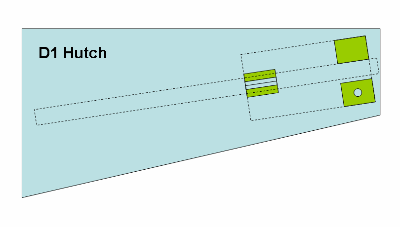

In order to find the position of the optical table back easily, if
it had to be removed, a 3-point mount consisting of point, groove &
plane, is anchored to the floor. Tooling balls are attached to the
movable table legs. The table can be landed easily on the kinematic
mount as the critical components of the point and the groove are
positioned in easily accessible positions, while the uncritical plane
supports the leg in the rear upstream position (see picture).
The table height is controlled by the 3 DC motor-driven adjustable
legs and the z jacks of the table top. The DC motor positions have to
be adjusted manually with the driver box which allows to control each
of the 3 legs individually. For this purpose the six jacks of the table
top should be placed at there center positions and the table should be
jacked up to the beam height (see section "Optical Bench") and then
levelled (below the adjustable table top). The kinematic mount ensures
that the lateral table positions are within reach of the table top
motors.

The six table top jacks including a 3-point mount as well as passive
sliders allow the table to be positions for 3 translations and three
rotations. The three z-jacks control table height as well as table
pitch and
table roll. The two x-jacks control the x-position
perpendicular to the beam as well as table yaw. Finally the y motor
moves the
table along the beam.
Names and positive directions follow the usual hutch coordinate
system with x pointing towards the storage ring, y along the beam, and
z vertical. Positive rotation directions are determined by the
right-hand rule: if the thumb points in direction of the rotation axis
with orientation determined by the hutch coordinate vectors, the finger
indicate the positive direction.
The Newport X-95 optical bench has to be aligned parallel to the
beam and at the canonic height that leaves a 9 1/2" spacing between the
top of a X-95 clamp and the beam. For this part of the line-up a
suitable pinhole in combination with an ion chamber are used. As soon
as the table has been driven within a couple of mm of correct height
with the DC motors, the line-up pinhole is placed at the upstream jack
position. Motors "xu" and "zu" are scanned to center the pinhole on the
beam.
The the pinhole is placed at the downstream jack positions and now "xd"
and "zd" are centered on the beam. Now the optical bench is parallel to
the beam at the canonic distance.
With the optical bench lined up the flight path componts more or
less will just fall into place. The assembly starts from the upstream
end: The beam-defining slits "sh" is connected to the rigid flight path
into the cave by a bellows. It is advisable to leave the screws
mounting the slits to the height adjustment loose until the successive
components are put into place. Next arts are the CCD shutter, the
"Imon" ion chamber, and the guard slits "sg". "sg" and the rigidly
coupled "Imon" chamber are prealigned and "sh" should just yield as
needed. The smallest aperture is defined by "Imon". Finally various
windows can be mounted of the KF-40 tee with the helium inlet.
The D1 GISAXS stage is essential to D1 in-house research and many
user experiments. It is mounted on a separate rail perpendicular to the
optical bench at the downstream end of the optical table. Initially the
table "yu" motor needs to be adjusted quite well to provide the correct
spacing between end of the flight path to the stage.
The GISAXS stage can be removed by simple moving it to the rear, out
of the way for most other experinents. When the sample bracket is
removed, there will be ample space for other sample stages on the main
rail, or the incident flight path can be extended past the stage.
Fig. 2. SAXS/GISAXS rail system
The new version of the optical table has
the full six degrees of freedom by allowing independent motion of the
downstream z-jacks. The set of six translations can be transformed into
three translations in x,y,z and three rotations pitch, roll, yaw using
the following relations:
transforms
zd = (zdr +
zdf)/2
xt
= (xu + xd)/2
yt = yt
zt = (zu + zd)/2
pitch
= deg((zd - zu)/LUD)
roll = deg((zdf - zdr)/LRF)
yaw = deg((xu - xd)/LUD)
For programming the macromotors, also the
inverse transforms need to be specified:
inverse transforms
xu = xt
+ yaw*LUD/2
xd = xt
- yaw*LUD/2
yt
= yt
zu = zt -
rad(pitch)*LUD/2
zdr = zt +
rad(pitch)*LUD/2 - rad(roll)*LRF/2
zdf = zt +
rad(pitch)*LUD/2 + rad(roll)*LRF/2
The optical table dimensions are:
The trivial transformation for motor yt
was included for completeness. The auxiliary motor zd is useful for the
pinhole alignment (see section "Optical Bench"). The macromotor
definitions are contained in file dtable.mac
on ~/Macros/nondist.